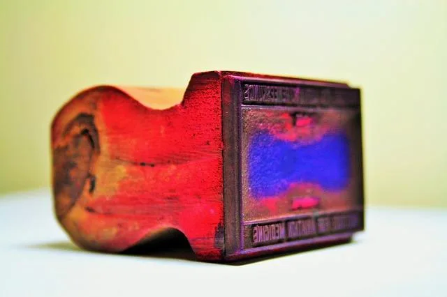

We believe security software like Kicksecure needs to remain Open Source and independent. Would you help sustain and grow the project? Learn more about our 14 year success story and maybe DONATE!
DonorsDocumentationWiki EnhancementsPrevious page: DonorsIndex page: DocumentationNext page: Wiki EnhancementsOfficial Kicksecure Online Profiles

Twitter, Facebook, YouTube and other Official Social Network Profiles by Kicksecure.
Kicksecure Social Media Profiles
There are a few Kicksecure social media profiles, but users should not rely on them for getting up-to-date Kicksecure News. Instead, refer to Follow Kicksecure Developments for better sources of Kicksecure-related news. Social media profiles are not suitable for contacting Kicksecure developers; see Contact for relevant contact information.
If users can safely share Kicksecure information or positive experiences using the platform with others, feel free to follow or like these profiles below with an anonymous account as a small way to Contribute.
Official Forum
Instant Message Groups
- Kicksecure Telegram News Channel (active)
- Kicksecure Matrix Channel (inactive, read-only)
Social Media Accounts
- reddit r/Kicksecure subreddit
- Friendica Kicksecure
(maintained by nurmagoz) (Supports
ActivityPub. Also users of Mastodon can follow.) - Twitter Kicksecure (maintained by Kicksecure team)
- Facebook Kicksecure (maintained by Kicksecure team)
- Mastodon Kicksecure
(maintained by nurmagoz) (Supports
ActivityPub.) - Bluesky Kicksecure
- Pinterest Kicksecure
Video Platform Accounts
- YouTube PrettyGoodSecurity
- Odysee PrettyGoodSecurity
- BitChute PrettyGoodSecurity
- Rumble PrettyGoodSecurity
Developer Accounts
- virtualbox.org:
adrelanos - Wilders Security Forums: adrelanos
- Bitcoin: adrelanos
- github: adrelanos
- reddit.com: adrelanos
- slashdot.org: adrelanos
- wilderssecurity.com: adrelanos
- bitcointalk.org: adrelanos
- keybase.io: adrelanos
- launchpad.net/~adrelanos: adrelanos
- https://tails.boum.org: adrelanos
- irc.oftc.net: nickname adrelanos, registered as adrelanos
- savannah.gnu.org: adrelanos
- stackexchange: adrelanos;
2 - The Tor Project trac: proper
- twitter: adrelanos
- wikipedia.org: adrelanos
- getmonero.org: adrelanos
- Kicksecure Matrix Channel: HulaHoopWhonix
- Kicksecure Matrix Channel: adrelanos
- matrix:
@adrelanos:matrix.org - forum.qubes-os.org: adrelanos
Admins
The personal opinions of moderators or contributors to the Kicksecure project do not represent the project as a whole.
Selection of Platforms
Account Creation
An account will most likely be created, when...
Criteria:
- The platform must be somewhat popular or show potential to become somewhat popular. [1]
- Easy sign-up.
- Legal.
Non-Criteria:
- Networks respects privacy of its users.
- Tor users are permitted to sign-up.
- Anonymous sign-up permitted.
- Other ethical or political considerations.
- In an ideal world, "perfectly moral" decisions would be made but that is deemed impractical. For elaboration, see unsubstantiated conclusions. [2]
Reasons for account creation:
- Reserving account name.
- Censorship resistance.
- Escaping (potential) shadow banning.
- Decentralization, diversity.
- Allowing users to choose their favorite network.
Non-Reasons for account creation:
- Endorsing that network.
Criteria for which Social Networks accounts are most actively used
Amended October 24, 2020.
- Usability. The easier it is to (auto) post to these networks, i.e. post 1 time using an (external or third party such as IFTT) tool and then spread to multiple networks, the more likely this network is going to see more posting activity.
- Depends on contributor time and availability to mirror posts to these networks.
Criteria for Footer Inclusion
Amended October 24, 2020.
Criteria for (wiki) footer inclusion:
- platforms self-hosted by Kicksecure (discourse forums, newsletter, rss)
- third party platforms:
- popular, generally active or followed by our user community regardless of whether based on Freedom Software or non-freedom software
- promising platforms that have the potential to grow or are in an expansion phase
- experimentation
- technical merit (decentralized and/or censorship-resistant)
End-to-End Encrypted Public Chat
Unavailable.
- blocker: Kicksecure matrix chat is bridged to Kicksecure telegram chat. Meaning, any messages on matrix and telegram gets relays. (As long as the free relay bot service is functional.) Matrix channel encryption is incompatible with relaying to Telegram.
- Other reasons:
- It's a public chat anyhow. Anyone can join telegram and view that chat history.
- No clear threat model.
- Lower maintenance effort.
Footnotes
- This is a somewhat arbitrary determination and not too much time is spent on research.
- In that case most major networks could not be used because most fail in one regard or another. Therefore no such attempt is being made.
Categories: Documentation